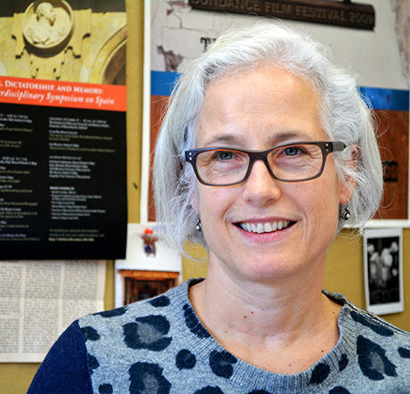

FACULTY
See also the Publications and Projects page.

PROGRAM DIRECTOR
Barbara Zecchi
Born in the UK and raised in Italy, where she received a Laurea cum laude from the Università Ca’ Foscari of Venice, Barbara Zecchi holds two Master’s Degrees (in Spanish Literatures and Cultures from the University of California San Diego and in Italian Studies from the University of California Los Angeles); a Certificate in Screenwriting from the University Juan Carlos I of Madrid, Spain; and a PhD in Romance Studies from the University of California Los Angeles, with a dissertation entitled The Representation of Rape and the Rape of Representation: Sexual/Textual Violence in Spain and Italy.
Zecchi’s research and teaching interests include European and Latin American cinemas, feminist film theory, film adaptation theory, gender studies, and the use of technology in the humanities.
In addition to a dozen video-graphic essays, presented in the US, UK, Spain, Italy and Mexico, she has authored some 50 articles and book chapters, three monographic books, and seven edited volumes. Her first monograph, Desenfocadas/Out of Focus develops an analysis of the historical evolution of women film productionthrough four generations of Spanish women directors. La pantalla sexuada/The Gendered Screen is a cross-sectional study of the major concepts that have been influential in feminist film theory. El género del género/The Gender of Genres (in progress) focuses on the most common genres of women film production, such as melodrama, comedy, thriller, among others.
She has received numerous invitation to teach as visiting professor in the United States and Europe and has lectured extensively in the United States, Canada, Spain, Italy, UK, Mexico, Cuba and the Dominican Republic.
Zecchi is the co-founder and vice-president of the international research network CinemAGEnder, based in Birmingham. The main objective of this group is to study ageism in visual cultures. She is also the founder and director of the UMass Gynocine Project, an open-access online database on the History of Spanish Cinema by women.
She has been part of two research projects funded by the Spanish Government: Images of the Other (University Carlos III of Madrid), and Body and Textuality (University of Barcelona), and she has recently been invited to be part of GECA (Gender, Aesthetic and Audiovisual Culture, University Complutense of Madrid), an interdisciplinary, interdepartmental and interuniversity LGBT research group that fosters non-discriminatory policies in film and other audio-visual productions.
She is the founder and co-organizer of the UMass Catalan Film Festival, partially funded by a grant from the Catalan government and by the Spanish Consulate, and oversees the curation of the UMass Latin American Film Festival. She has also collaborated as a member of the jury in the Cines del Sur Film Festival of Granada (Spain) and Gender Lab MicGénero Film Festival in Mexico and Argentina.
She was recently appointed Associate Member of the Film Academy of Spain.
More information here: www.barbarazecchi.com
email: bzecchi@umass.edu
phone:
(413) 545-2887
DIRECTOR OF THE MASSACHUSETTS MULTICULTURAL FILM FESTIVAL
 Shawn Shimpach
Shawn Shimpach
Shawn Shimpach is Associate Professor of Film and Media Studies in the Department of Communication and Co-Director of the Five College Film Council. He has been curator and co-curator of the Massachusetts Multicultural Film Festival since 2014. He teaches courses on Film History, Genre, Media Institutions, Television Studies, Textuality, and Media Historiography. His research interests include the cultural history of film, television, and media; the social and institutional constructions of the media audience; genre theory and screen genres; and screen industries. His work focuses on the value and meanings created at the conjuncture of cultural, institutional, and textual practice. His book Television in Transition: The Life and Afterlife of the Narrative Action Hero (Wiley-Blackwell, 2010) combines and connects analysis of the contemporary television industry with close readings of four individual programs to explain how innovation takes place and meaning is produced amid changing institutional configurations. His work has also appeared in Cultural Studies, Social Semiotics, American Quarterly, Feminist Media Histories, Historical Journal of Film, Radio and Television, and such collections as Media and Public Spheres (Palgrave Macmillan, 2007), the Handbook of Media Audiences (Wiley-Blackwell, 2011), The International Encyclopedia of Media Studies (Wiley-Blackwell, 2013), and the Routledge Companion to Global Popular Culture (Routledge, 2015). He is editor of the forthcoming Routledge Companion to Global Television scheduled for publication in 2019.
shimpach@comm.umass.edu
(413) 545-2341
GRADUATE DIRECTOR
Anne Ciecko
Anne Ciecko is Associate Professor of Film in the Communication Department. Her current and ongoing research interests are focused on international cinema, primarily non-western cinema (Cinemas of the Global South)--especially Arab, Asian, and African cinema; international co-productions; diasporic audiences; international transmedia stardom and celebrity; international film festivals; Afropop and Arabpop music and film; intercultural film/video and multimedia installations by women. Her writing has appeared in the following academic journals and arts publications: Afterimage, Asian Cinema, Asian Journal of Communication, Cinema Journal, Cinemaya, Film Quarterly, History, Journal of Film and Video, Journal of Popular Film and Television, Jump Cut: A Review of Contemporary Media, Literature/Film Quarterly, Quarterly Review of Film and Video, Spectator: Journal of Film and Television Criticism, Tamkang Review, Velvet Light Trap, and others. Her authored or coauthored articles have been published in the anthologies Fandom: Identities and Communities in a Mediated World (New York University Press, 2007), Global Currents: Media and Technology Now (Rutgers University Press, 2004), Fifty Contemporary Filmmakers (Routledge, 2002, and the 2nd edition Fifty Contemporary Film Directors, 2010), Transnational Chinese Cinemas (University of Hawaii, 1997), and others. She is also editor of the book Contemporary Asian Cinema: Popular Culture in a Global Frame (Berg, 2006) and a special issue of the journal Quarterly Review of Film and Video on the International Film Star (Volume 19.1, 2002).
ciecko@comm.umass.edu
(413)
545-6348
 FOUNDER AND PROFESSOR EMERITA
FOUNDER AND PROFESSOR EMERITA
Catherine Portuges
Catherine Portuges is Professor of Comparative Literature/LLC, Director of the Interdepartmental Program in Film Studies, and Curator of the annual Massachusetts Multicultural Film Festival.
She lectures, curates and consults widely on European and international cinema; she is a regular delegate to the Toronto International Film Festival and the annual Hungarian Film Week in Budapest, and guest curator for the Hungarian Cultural Center in London. Professor Portuges has programmed and designed film series, seminars and screenings for the Embassy of the Republic of Hungary in Los Angeles, the Institute of Contemporary Arts (London), the U.S. Holocaust Memorial Museum (Washington, D.C), the Museum of Jewish Heritage (New York), the Open Society Archives/Central European University (Budapest), La Sorbonne Nouvelle (Paris), The Film Society of Lincoln Center (New York) and The Barbican (London).
She is the author of Screen Memories: the Hungarian Cinema of Márta Mészáros (Indiana 1993), editor of “New Perspectives on Hungarian Cinema” (www.kinokultura.com 2008) and co-editor of Cinemas in Transition: Post-communism in East-Central Europe (Temple Press, 2011). Her essays have appeared in Projected Shadows: Psychoanalytic Reflections on Loss in European Cinema, Structures et Pouvoirs des Imaginaires, Caméra Politique: Cinéma et Stalinisme; East European Cinemas (Routledge, 2005), The Cinema of Central Europe (Wallflower, 2005). She is a contributor to and editorial board member of Studies in Eastern European Cinemas, Studies in Hungarian Cinema, Cineaste, The Moving Image, and Slavic Review. In 2009, she was awarded the Pro Cultura Hungarica Medal by the Republic of Hungary for her contributions to cinema and, in 2010, she received the Chancellor's Medal for distinguished faculty from the University of Massachusetts Amherst.
email: portuges@complit.umass.edu
phone:
(413)
545-8993
FACULTY
Kevin Anderson
Kevin Anderson is a Lecturer in Communication and in Anthropology. His research traverses the fields of film studies and anthropology, particularly along the lines of social aesthetics, phenomenology, and the body. One piece compares how claims of "factuality" and "truth" are made in Reality TV and Mockumentary film; in another he questions that categorization of films as "ethnographic," demonstrating various ways we can read all manner of film for their anthropological qualities. His work has appeared in PostScript, Journal of Film and Video, Film and Philosophy, AfterImage, and Medical Anthropology. His film projects have taken him to Ethiopia, Japan, and Ireland.
kta@anthro.umass.edu
(413) 545-4759
 Barton Byg
Barton Byg
Barton Byg is Professor in German & Scandinavian Studies, where his teaching focuses on German and international cinema. Research interests include documentary, culture of the Cold War, and memory culture. As a Five College Fortieth Anniversary Professor from 2005 to 2008, he taught courses at Hampshire and Smith Colleges—on Brecht and world cinema, landscape and cinema, and color. He also recently taught a new course on early Scandinavian Cinema with visiting professor Louise Wallenberg, film scholar and director of the Center for Fashion Studies, Stockholm University. In fall 2011 he was awarded the Reinhold Schünzel Award of CineGraph Hamburg. The Reinhold Schünzel Award is an honorary prize awarded for long-time achievements in the field of restoration, preservation or dissemination and popularization of the German and European film heritage. Professor Byg is author of the book Landscapes of Resistance: The German Films of Daniele Huillet and Jean-Marie Straub (University of California Press, 1995), and is founding director of the DEFA Film Library, the only archive, distributor and study center outside Europe devoted to East German film and related works (www.umass.edu/defa).
byg@german.umass.edu
(413) 545-6671
Laszlo Dienes
Laszlo Dienes is Professor of Slavic Languages and Literatures in the Comparative Literature Department. He regularly teaches "Russia in Film" and "Russian and Soviet Culture." He has published Russian Literature in Exile: The Life and Work of Gajto Gazdanov (Otto Sagner Publishers, Munich, 1982). His recent scholarly work focuses on the writing and cinema of East European emigre artists.
dienes@complit.umass.edu
(413)
545-5618
Bruce Geisler
Bruce Geisler is a Senior Lecturer in the Department of Communication, where he teaches video production, screenwriting, and documentary filmmaking.
He is an award-winning screenwriter and filmmaker whose recent feature length documentary, Free Spirits, played in movie theaters and film festivals nationally. He earned an MFA in film production and screenwriting from the film school at the University of Southern California.
geisler@comm.umass.edu
(413) 545-4758
Olga Gershenson
Olga Gershenson is Professor of Judaic and Near Eastern Studies at the University of Massachusetts Amherst. She got her BA in Russia, her MA in Israel, and her PhD in the US. Her personal geography parallels her academic path tracking Russian-Jewish culture at home and abroad. For years she followed Russian immigrant cultural production in Israel: she published Gesher: Russian Theater in Israel (2005) about a unique bilingual theater in Tel Aviv, and a series of articles about Russian-Israeli cinema. Then she detoured into studying gender and power relations, and published a collection Ladies and Gents: Public Toilets and Gender (2009). Back on her Russian-Jewish track, she has recently finished writing a book about the unknown, forgotten, or banned Holocaust films in the Soviet Union (soon to be published by Rutgers UP). Olga Gershenson teaches courses on Jewish cultural studies, such as "Jewish Theater and Film" or "Israeli and Palestinian Popular Cultures." [Olga Gershenson's website]
gershenson@judnea.umass.edu
(413) 545-2550
Susan Jahoda
Susan Jahoda works in a range of genres including video, sound, photography, text, performance, and installation. Her works have been exhibited widely, including venues in London, Paris, Venice, Basel, Seoul, Russia, Rome, and New York. Additionally, she has received grants from the National Endowment of the Arts, the New York Foundation for the Arts and The Trust for Mutual Understanding. Jahoda has co-curated a number of exhibitions and screenings including Martha Rosler Library, an E-flux project in collaboration with Martha Rosler and Beyond the Instance of an Ending, (2009), Setting in Motion (2006), and Global Priority (2002), with the intent of bringing together a varied group of international individuals engaged in critical artistic practice. She has also published short stories and essays including “Spring Flowers,” in Class and its Others, University of Minnesota Press, (2000) and “Theatres of Madness,” in Deviant Bodies, Indiana University Press, (1995). In 1993 Jahoda began serving as the arts editor for the journal Rethinking Marxism, a position that has enabled her to collaborate with other artists and writers on numerous projects.
sej@art.umass.edu
(413)
545-6941
Don Eric Levine
Don Eric Levine, Associate Professor of Comparative Literature, teaches a variety of film courses in the Department of Comparative Literature, including Avant-Garde Film, International Film Noir, Fassbinder and Godard, and Gay(ze) in Cinema. He is also advisor for the film analysis track in the Comparative Literature program.
(413) 545-5810
Martin Norden
Martin Norden is Professor of Film Studies in the Communication Department. His teaching interests are in the areas of film history/theory/criticism and screenwriting. He has published more than sixty articles and reviews in such journals as Wide Angle, Journal of Popular Film and Television, Film Criticism, Film & History, and Paradoxa, and in numerous anthologies. A Spanish translation of his book, The Cinema of Isolation: A History of Physical Disability in the Movies (Rutgers, 1994), was published by Fundacion ONCE in 1998. He is also the author of John Barrymore: A Bio-Bibliography (Greenwood, 1995) and the book review editor for the Journal of Popular Film and Television. [Martin Norden's website]
norden@comm.umass.edu
(413)
545-0598
Daniel Pope
With a Ph.D. in Comparative Literature, Daniel Pope teaches courses in national and international cinemas, film realism, film criticism in the age of new media, as well as film genres such as the end-of-the-world film. His recent research explores photography, realism, and figural approaches to nonfiction narrative. He has served as Assistant Curator of the Massachusetts Multicultural Film Festival since 2011, interviewing such filmmakers and artists as Can Candan, Diana Gróo, Lech Majewski, Signe Baumane, and Kevin Everson. Pope is a Fulbright Scholar who has published work in Studies in East European Cinema as well as a chapter in Searching for Sebald (2007).
dpope@hfa.umass.edu
(413) 545-3659
Demetria Shabazz
Demetria Rougeaux Shabazz, Assistant Professor (Ph.D. University of Alabama), teaches in the Department of Communication at University of Massachusetts at Amherst. She is currently working on a manuscript that looks at the production and signification of African American female stars in film and television during the 1960s. Her essay “Birth through Conflict: TV Responds to the Politics of Race in 1968,” appears in the anthology America Viewed and Skewed: Television Situation Comedies (SUNY Press, October 2005). Her teaching and research interests include filmic and television production practices and the construction of identity, African filmmaking and aesthetic practices, African American women in situation-comedy and reality television, democracy and community media, underrepresented communities in mainstream media, digital storytelling.
dshabazz@comm.umass.edu
(413) 545-5770

Jonathan Skolnik
Jonathan Skolnik is Associate Professor of German and adjunct faculty for History and for Judaic & Near Eastern Studies. His interests include German-Jewish literature and culture, 19th- and 20th-century literature, exile film, intellectual history. He has published articles on the films of Edgar Ulmer, Fritz Lang, and Grigori Roshal.
jskolnik@german.umass.edu
(413) 545-4245
Barry Spence
Barry A. Spence, Ph.D. in Comparative Literature, teaches courses on French film, film theory, comedy, and the relationship between cinema and theater. A specialist in narratology, Ancient Greek oral epic and tragedy, and the modernists James Joyce and Samuel Beckett, his current research focuses on modernist cinema and the films of Andrei Tarkovsky, Pier Paolo Pasolini, and Agnès Varda. He has published in Skenè: Journal of Theatre and Drama Studies, as well as in Phoenix and the Bryn Mawr Classical Review. Since 2010, he has been an Assistant Curator on the Massachusetts Multicultural Film Festival, and since 2011, the chief undergraduate advisor in the Interdepartmental Program in Film Studies.
bspence@complit.umass.edu
(413) 577-2318
Jacqueline Urla
Jacqueline Urla is Professor of Anthropology teaches visual anthropology with special interests in ethnographic film and indigenous media. She conducts research on minority politics, social movements, historical memory, and the semiotics of resistance. Her career in visual anthropology was launched in 1992 when she worked on an interdisciplinary project funded by a Getty Senior Research Grant exploring the representation of whiteness in native peoples' art, material culture, and visual media. She served as Interim Director of the Film Studies Program (2006-2008) and curated two editions of the Massachusetts Multicultural Film Festival: “Encuentros: New Cinema of Latin America and Spain” (2007) and “Africanicities: Conflict and Community” (2008) featuring the visit of actor/activist Danny Glover. [Jacqueline Urla's website]
jurla@anthro.umass.edu
(413)
545-2869
Associated Faculty
Barbara Bolibok
Barbara Bolibok is a Lecturer in the Comparative Literature Department and has taught courses on Polish Film, Polish and Russian Writers, Russian literature, and Polish language. Her theoretical and research interests are interdisciplinary. In analyzing cinematic texts, Bolibok draws on the language of psychoanalysis as a source of nuanced understanding of symbolic processes and rich metaphors. She is interested in gaining a deeper understanding of the capacity of film as an art form to symbolically work through cultural traumas. Her research interests include Polish cinema, the work of Polish female directors, the films of Krzysztof Kieslowski, and psychoanalytic approaches to film interpretation. Her work in literary studies focuses on the poetics of self-representation in the writings of Polish and Russian women autobiographers.
In addition to earning a PhD in Russian literature from Cornell University and her academic teaching, Bolibok graduated from the Smith College School for Social Work with a MSW degree and is a practicing psychoanalytic psychotherapist in Northampton. Her publications appeared in The Russian Review, Smith Studies in Social Work, and Cardozo Studies in Law and Literature.
bbolibok@slavic.umass.edu
(413) 586-5143
Gilbert McCauley
Gilbert McCauley is an Associate Professor in the Department of Theater at the University of Massachusetts and Co-founder/Associate Artistic Director of Art n Soulplay and Artistic Associate at New WORLD Theater. He has served as the Producing Artistic Director of the Oakland Ensemble Theatre, Resident Director at Rites and Reason Theatre, and as an acting company member of the Repertory Theatre of St. Louis. He has also served on the theater faculties at University of California at Berkeley, University of Michigan at Ann Arbor and University of Rhode Island at Kingston. Mr. McCauley has directed Off-Broadway and at regional theatres around the country including Arena Stage, Goodman Theatre, Old Globe Theatre, Oregon Shakespeare Festival, Playwrights Horizons, Seattle Repertory Theatre, and the National Theatre of Ghana. His most recent directing credits include Piano Lesson by August Wilson, and most recently his own play Crossing John at the Crossroads. [Gilbert McCauley's website]
gilmac@theater.umass.edu
(413) 545-3490
José Ornelas
José Ornelas a Professor of Spanish and Portuguese. His research interests include Contemporary Portuguese Narrative, Lusophone African Narrative, Women Writers, Cinema and Drama. His scholarly work has appeared in many journals and books in the U.S. and abroad. He has published mostly on contemporary Portuguese writers, including the ’98 Nobel Prize winner in literature, José Saramago. In 2007, he co-edited with Paulo de Medeiros a volume on Saramago, Da possibilidade do impossível: Leituras de Saramago.
ornelas@spanport.umass.edu
(413) 545-4921
Daphne Patai
Daphne Patai is a Professor of Portuguese in the Department of Languages, Literatures, and Cultures. Her B.A. (from Indiana University) was in Comparative Literature, and her Ph.D. (University of Wisconsin, Madison) was in Portuguese. She teaches and writes about Brazilian literature and film, translation studies, utopian film and fiction, literary theory, oral history, feminism and women's studies, and problems in higher education. She is the author and editor of over a dozen books, among them: Myth and Ideology in Contemporary Brazilian Literature (1983); The Orwell Mystique: A Study in Male Ideology (1984), Brazilian Women Speak: Contemporary Life Stories (1988); Women’s Words: The Feminist Practice of Oral History (1991, co-edited with Sherna Berger Gluck); Rediscovering Forgotten Radicals: British Women Writers 1889-1939 (1993, co-edited with Angela Ingram); and Heterophobia: Sexual Harassment and the Future of Feminism (1998). Her ten years with a joint appointment in women's studies led to her 1994 book Professing Feminism, written with Noretta Koertge, which was reissued in a new and expanded edition in 2003 as Professing Feminism: Education and Indoctrination in Women’s Studies. Together with Will H. Corral, Patai edited a large volume of essays entitled Theory’s Empire: An Anthology of Dissent (Columbia University Press, 2005). A volume of Patai's own essays, entitled ‘What Price Utopia?’ : Essays on Ideological Policing, Feminism, and Academic Affairs, was published in 2008 (Rowman & Littlefield). A selection of her essays was recently published in Brazil as História Oral, Feminismo e Política (Letra e Voz, 2010).
daphne.patai@spanport.umass.edu
(413) 545-2887
Patrick Mensah
Patrick Mensah is Associate Professor of French andDirector of French and Francophone Studies. He earned his doctorate at Cornell University where he wrote his dissertation on "The Politics of Masquerade: On the Ethical and Epistemological Dilemmas and Debts of Theatrical Language in Pascal, La Rochefoucauld, Rousseau, and Contemporary Thought." His research interests include enlightenment studies, critical theory, cultural theory, and post-colonial discourses. He has taught courses and supervised independent studies on postcolonial theory, contemporary critical theory, Francophone African film, Caribbean women’s writing., ‘love and sex’ in French culture, critical and textual analysis, to name a few. He is the translator of Jacques Derrida’s Monolingualism of the Other; or, the Prosthesis of Origin,Stanford University Press, 1998.
pmensah@frital.umass.edu
(413) 545-6694
Emeritus Faculty
Ernest Allen Jr.
Ernest Allen Jr. is a Professor in the Department of Afro-American Studies where he teaches courses in Afro-American History and Black Studies. His publications engage historical, cultural and philosophical questions of topics ranging from Du Boisian "double consciousness" to "message rap," from the Nation of Islam, to Japanese/African American relations.
(413) 545-2751
eallen@afroam.umass.edu
Carolyn Anderson
Carolyn Anderson, in the Department of Communication, specializes in documentary film; media historiography; film- television genre theory and criticism; and the cinema of the 1960s. Her publications include Reality Fictions: The Films of Frederick Wiseman (co-authored with Thomas W. Benson, Southern Illinois University Press, 1989), and Documentary Dilemmas: Frederick Wiseman's Titicut Follies (co-authored with Benson, Southern Illinois University Press, 1991).
anderson@comm.umass.edu
(413)
545-3455